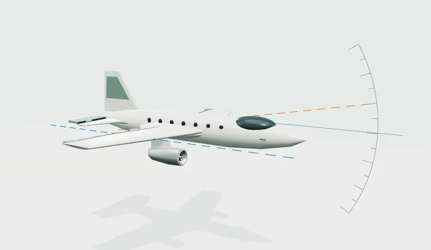

항공기 피치 제어
받음각·피치율·피치각이 서로 영향을 주는 선형 모델에서 PID 피치 제어를 실험합니다.
항공기 피치 제어
0.005 s
로딩 중…
피치각 · °
최근 15초 · 시간 (s) · 고정 범위 -30 … 30 °
피치율 · °/s
최근 15초 · 시간 (s) · 고정 범위 -30 … 30 °/s
승강타 · °
최근 15초 · 시간 (s) · 고정 범위 -25 … 25 °
제어 구조
그림에 초점을 맞춘 뒤 방향키로 좌우로 스크롤하세요.
모델·제어식·단위·실험 범위
모델과 제어식
실험 범위와 단위
정준 모델의 는 스케일된 상태입니다. 여기서는 로 변환해 실제 rad/s 피치율을 사용합니다. , , 는 rad로 적분합니다.The canonical state is scaled. Here is the physical pitch rate in rad/s; , and are integrated in radians.
트림점 근처의 선형 종방향 모델로 속도·고도 변화와 승강타 구동기 지연은 생략합니다. 또는 이면 선형 모델의 유효 범위를 벗어나므로 실험을 정지합니다.Linear longitudinal model near trim; airspeed/altitude changes and elevator actuator lag are omitted. or stops at the linear-model envelope.
항은 오차가 아닌 측정 피치율에 작용합니다. 각 샘플에서 승강타를 유지하며 RK4로 적분합니다.Derivative feedback acts on measured pitch rate, not error. Elevator is held over each sample and integrated with RK4.
제어 입력이 제한 범위를 벗어난 상태에서 오차가 포화를 더 심하게 만드는 경우에는 적분 누적을 멈춥니다. 이면 누적 적분값을 0으로 초기화합니다. 외란은 피치율 +5°/s 충격입니다.Conditional integration prevents windup. clears integral bias. Disturbance adds a +5°/s pitch-rate impulse.
고정 계산 간격 0.005 s. 숨겨진 탭은 일시정지합니다.
- 목표 피치각: -15 … 15 °
- 비례 이득: 0 … 8 rad/rad
- 적분 이득: 0 … 1 1/s
- 피치율 감쇠: 0 … 8 s
- 승강타 한계: 5 … 25 °
모델과 참고 자료
MathWorks 공식 문서: 항공기 피치 상태공간 모델 ↗
예제 모델(aircraftPitchSSModel.mat)의 두 번째 상태 를 피치율 (rad/s)로 환산하면 이 실험과 같은 상태방정식을 얻습니다.Rescaling the second state of the example model (aircraftPitchSSModel.mat) to pitch rate (rad/s) gives the state equations used in this experiment.
관련 MATLAB 프로젝트: Rick Hill의 피치 제어 앱 ↗
File Exchange 앱은 같은 모델에 LQR 상태 피드백을 적용합니다. 이 실험은 승강타 각도를 제한한 PID 제어를 사용합니다.